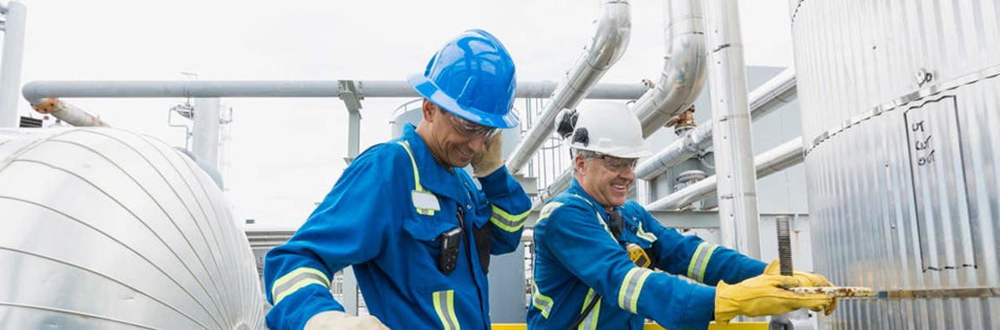

电焊机行业虽然受国家宏观调控政策和主要原材料价格居高不下、市场竞争日趋激烈的不利影响，但近年来仍然呈现快速增长的势头。生产经营状况良好，各项经济指标呈上升趋势。行业 统计数据显示，去年电焊机出口交货值较上年有较大增长，今年1~5月，电焊机出口交货值仍然呈上升趋势。 从行业整体形势看，形势不容乐观。今年下半年及今后一个时期电焊机行 业的竞争将更加激烈。这将迫使我国电焊机行业进一步加快技术进步的步伐，改进产品的技术构成，加快开发新产品，积极调整产品结构。企业应根据自己的特点，吸取国外先进的加工工 艺装备和技术，向小而专、小而特、小而强的方向发展。 利好：技术创新凸显成效 我国电焊机行业经过多年特别是最近几年的技术创新和快速发展，技术水平已有一定提高，技术 含量和附加值较高的自动焊机、半自动焊机、电阻焊机、专用成套焊接设备已成为相当数量厂家的主导产品。 在市场竞争日益激烈、主要原材料价格大幅上涨的情况下，电焊机行业的 经营重点已经在向高技术含量、高附加值的产品方向转移。有一定实力的企业积极投入资金进行新产品的研制、开发，或针对某一特定行业，开发用户急需的特种、专用及成套焊接设备。 同时，积极调整产品结构，提高企业效益和市场竞争能力。 目前，从电焊机行业的总体模式看，企业基本执行"以销定产，适量现货"的生产原则。交流弧焊机的产量已从前几年占总产 量的50%以上，下降到现在的47.62%；技术含量较高的自动焊机、半自动焊机、电阻焊机和特种、专用及成套焊接设备的产量已占总产量的41.92%，产值已占总产值的65.16%，销量已占 总销量的42.51%，销售额已占总销售额的64.69%；出口量已占总出口量的53.29%，出口额占总出口额的59.3%。 反差：销量大利润低 近年来，原材料价格持续大幅度上涨，而电 焊机产品价格并没有随之上升，这给电焊机企业，尤其以生产传统交流焊机及整流焊机（BX系列、ZXG系列、ZX5系列等）为主的电焊机制造企业，造成非常大的压力。 行业统计数据显示，企业生产销售大幅增长的同时，利润并未同步增长，利润的增幅相反比上年降低了27.24个百分点。造成这种情况的原因主要是原材料（矽钢片、铜材、钢材）价格一直 居高不下，生产成本大幅上扬。而产品售价却因市场竞争激烈无法同步上调，甚至出现下降，致使企业效益下滑。 自2002年下半年以来，矽钢片、钢材、铜材等主要原材料价格持续大 幅度上涨，已给当前的企业生产经营造成很大困难，而这一趋势将可能继续维持。 受主要原材料价格上涨影响，企业生产成本继续增加，经济效益下滑，赢利空间减小，若仍然仅靠价 格因素竞争，无利甚至负利率销售，片面强调市场占有率，将会严重危及企业的生存，也会对整个行业不利。 警惕：产能过剩 由于受需求增长刺激，以及市场准入门槛低，2005 年电焊机行业产能扩张过快，低端产品供大于求的现象仍然存在。
